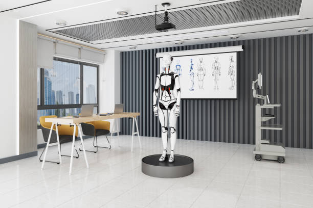
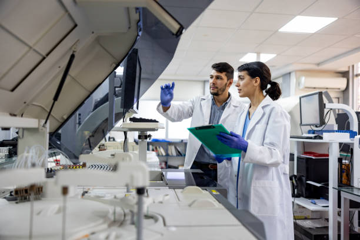

▶ Tech Labs
Computer LabEquipped with high-performance PCs, software development tools, and coding environments for students to experiment and learn programming and cybersecurity techniques. Students can also participate in hackathons and coding competitions here, enhancing both practical skills and teamwork. |

|
|  |
Research & AI LabDesigned for innovation, this lab provides AI platforms, robotics kits, and molecular modeling tools for cutting-edge research projects across multiple disciplines. It also hosts workshops on AI ethics, machine learning, and data analytics, giving students a competitive edge. |
▶ Medical Labs
Medical Simulation LabOffers a realistic environment for medical training, including diagnostic tools, patient simulators, and medical imaging equipment to practice procedures safely. Students can practice emergency response scenarios and improve their clinical decision-making skills under supervision. |
 |

|
Clinical & Diagnostic LabEquipped for blood analysis, pathology testing, and microbiology studies, enabling students to gain hands-on experience with modern laboratory techniques. It also supports student research projects and case studies, fostering a deeper understanding of medical diagnostics. |